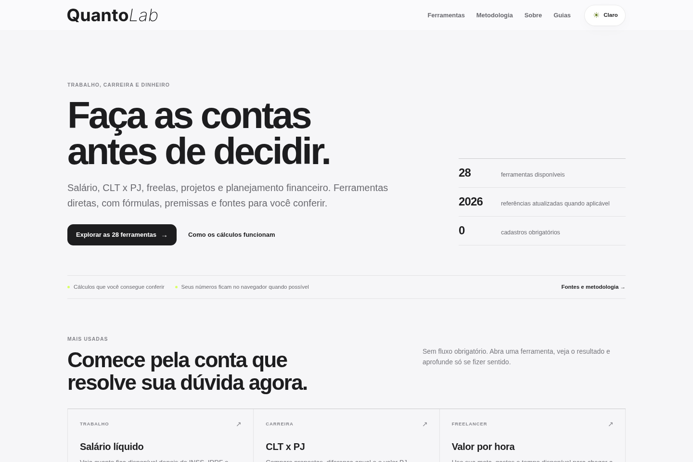

Tourism Design System
Scalable design system for a confidential tourism product.
PRODUCT STRATEGY · UX/UI · INNOVATION · AI
I design digital products that turn complex systems, workflows and business needs into clear experiences.
Working across product strategy, UX/UI, AI, innovation and learning to connect user needs, business priorities and technology.
I’m Gabriel Gonzaga, a Product Designer based in São Paulo. My background spans visual design, customer experience, corporate innovation and digital products—today focused on product strategy, systems and AI-enabled experiences.
PRODUCT DESIGN · STRATEGY · SYSTEMS · AICase studies / product work

Decision-support tools for work, career and money.
Internal product for information, operations and decision support.
Scalable design system for a confidential tourism product.
Gamified learning product concept for leadership and professional development.
Business context, users, constraints and evidence
Define the problem, opportunity and success criteria
Research, references, flows and hypotheses
Product structure, interfaces and system behavior
Test, curate, refine and evolve